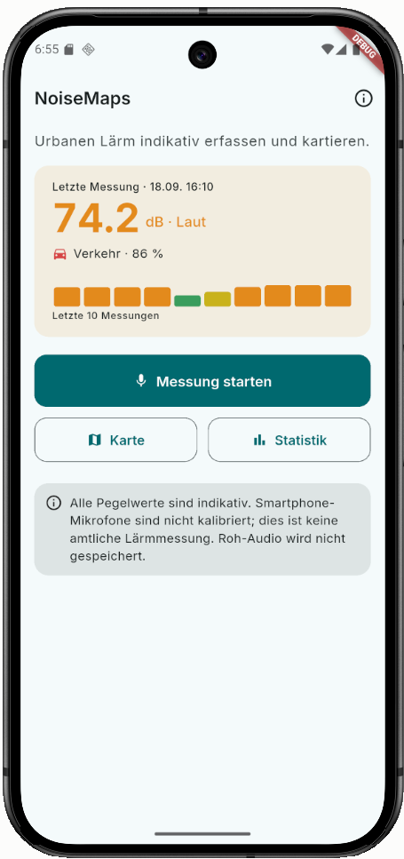
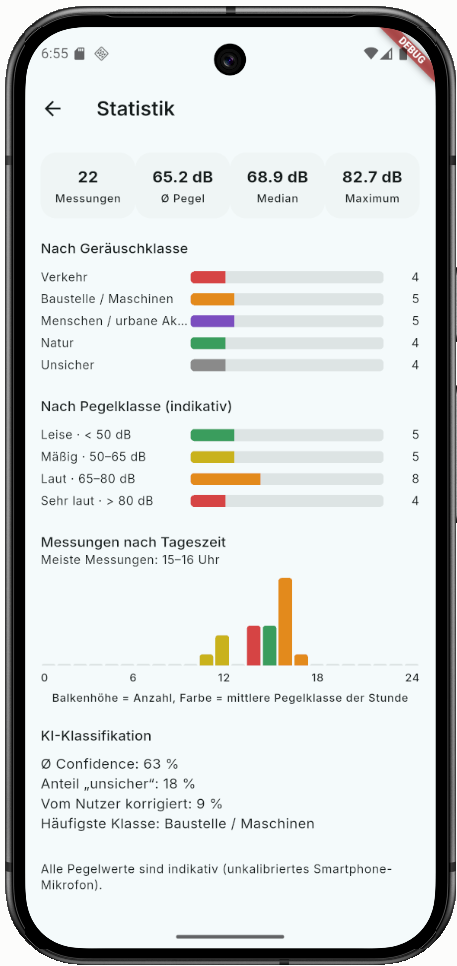
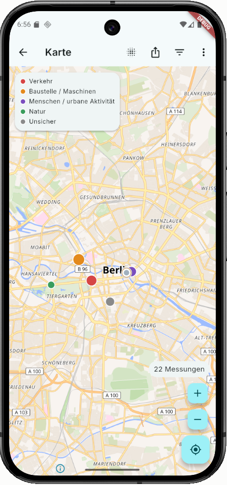
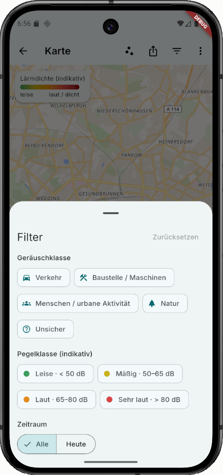
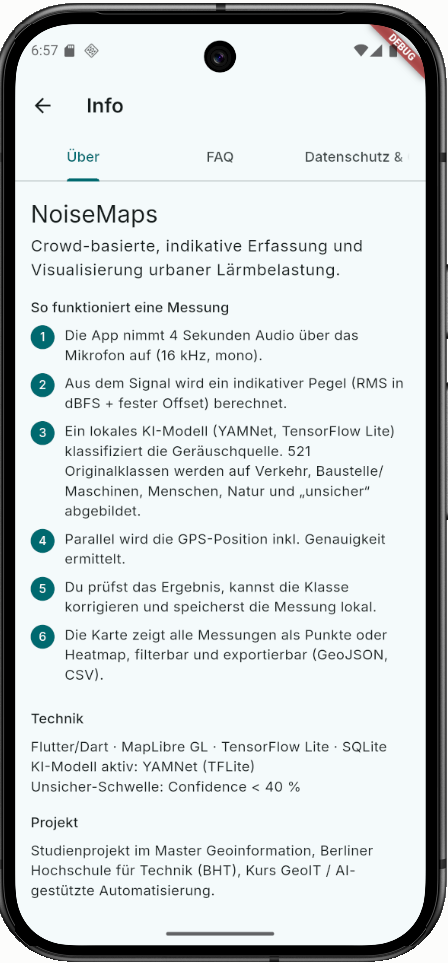

Mobile GeoIT-App zur crowd-basierten, indikativen Erfassung und Visualisierung urbaner Lärmbelastung.
Studienprojekt im Master Geoinformation, BHT Berlin – Kurs GeoIT / Automatisierte Geodatenprozessierung (Prof. Wagner).
Name: Paul Timon Stolpmann Matrikelnummer: 110129
Quellcode: https://github.com/pstolpm/NoiseMaps Ausführbarer Code (Release-APK): https://github.com/pstolpm/NoiseMaps/releases/download/v1.0/app-release.apk (Installationsanleitung siehe INSTALLATION.md)
Nur die fertige App ausprobieren, ohne Entwicklungsumgebung? Siehe INSTALLATION.md. Kurzer technischer Überblick (Architektur, Datenfluss, KI-Modell)? Siehe TECHNICAL_OVERVIEW.md.
Wichtiger Hinweis: NoiseMaps ist keine amtliche Schallpegelmessung. Smartphone-Mikrofone sind nicht kalibriert; alle Pegelwerte sind indikativ. Roh-Audio wird nach der Auswertung verworfen und nicht gespeichert.
Der komplette Funktionsumfang der „Definition of Done" (siehe Projektunterlagen) ist umgesetzt und auf einem Android-Emulator getestet, inklusive Installation der Release-APK auf einem zweiten Gerät.
Voraussetzungen: Flutter (stable), Android SDK inkl. NDK 28.2.13676358, ein Android-Emulator oder physisches Gerät (min. Android 8.0 / API 26).
Das KI-Modell yamnet.tflite muss vor dem ersten Build unter assets/models/yamnet.tflite liegen (siehe TECHNICAL_OVERVIEW.md für die Quelle).
flutter pub get
flutter run
Tests:
flutter analyze
flutter test
Release-APK bauen:
flutter build apk --release
Ergebnis: build/app/outputs/flutter-apk/app-release.apk
lib/
core/ Konstanten, Theme, Utilities
models/ Datenmodelle (NoiseMeasurement, NoiseCategory, Filter, Statistik)
services/ LocationService, AudioService, SoundLevelService,
AiClassificationService, ExportService – jeweils als
austauschbares Interface mit echter und Fake/Mock-Implementierung
repositories/ MeasurementRepository (SQLite- und In-Memory-Implementierung)
screens/ Home, Messung, Ergebnis, Karte, Statistik, Info/FAQ
widgets/ wiederverwendbare UI-Bausteine
assets/
models/ yamnet.tflite (KI-Modell, siehe TECHNICAL_OVERVIEW.md)
labels/ Klassen-Mapping YAMNet -> Zielkategorien
fonts/ Inter (SIL OFL 1.1)
icon/ App-Icon-Quelldateien
test/ Unit- und Widget-Tests
Die zentrale Architekturentscheidung: Alle Kernfunktionen (Standort, Audio, KI, Speicherung) laufen hinter abstrakten Service-Interfaces. Dadurch lässt sich z. B. die KI-Komponente unabhängig von der restlichen App austauschen oder testen (Mock-Implementierungen werden in den Tests verwendet).
| Home | Messung / Ergebnis (Statistik) | Karte (Punkte) |
|---|---|---|
 |
 |
 |
| Karte (Heatmap + Filter) | Info / FAQ |
|---|---|
 |
 |
assets/fonts/LICENSE-Inter-OFL.txt)pubspec.yaml bzw. auf pub.dev einsehbar.